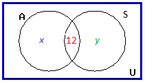
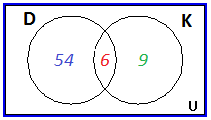
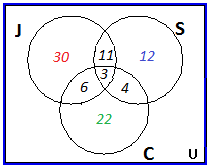
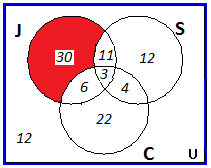

You are already familiar with the concept of sets from Set 1C-Sets, Intervals and Inequalities. Recall:
A concept not discussed in Set 1C is disjoint sets. Two sets \(A\) and \(B\) are called disjoint sets if their intersection is an empty set. This would be denoted \(A\cap B = \emptyset\). The following examples demonstrate the above ideas regarding sets.
| The subsets are: | |||
| \(\{ \},\) | \(\{\text{red} \},\) | \(\{\text{yellow} \},\) | \(\{\text{blue} \},\) |
| \(\{\text{red, yellow} \},\) | \(\{\text{red, blue} \},\) | \(\{\text{yellow, blue} \},\) | \(\{\text{red, yellow, blue} \}\) |
| Note that the empty set \(\{ \}\) is a subset of every set, and a set is a subset of itself. | Note also that there are \(8= 2^3\) subsets of the original set containing \(3\) elements. In general, a set with \(n\) elements will have \(2^n\) subsets! | ||
|
Use a comma between elements in a set: {red, yellow} and between subsets: {red},{red, yellow} when entering subsets in WeBWorK.
|
|||
| \(P\cup N=\{\text{red, yellow, blue, black} \}\) | The union is the set of all elements that are either in \(P\) OR in \(N\), or in both |
| \(P\cap N=\{\text{red} \}\) | The intersection is the set of all elements that are common to both \(P\) AND \(N\) |
| \(P\cap Y=\{ \}\) | \(P\) and \(Y\) have no elements in common, \(P\) and \(Y\) are disjoint |
| \(P'=\{\text{orange, green, gold, indigo, violet, purple, black} \}\) | The elements in \(U\) NOT in \(P\) |
Recall a Venn diagram represents a set as the interior of a circle. Often two or more circles are enclosed in a rectangle where the rectangle represents the universal set. These diagrams allow us to visualize an intersection or union of two sets or the complement of a set. We will now use Venn diagrams to sort various populations and count objects. We use the notation \(n(A)\) to represent the number of elements in set \(A\). For example, \(n(P\cup N) = 4\) in Example 4A-2.
| Let set \(A\) represent those surveyed with automatic transmissions. | Let set \(S\) represent those surveyed with standard transmissions. |
| Since \(12\) drove cars of both types Record \(\color{red}{12}\) in \(A\) AND \(S\) \(=A\cap S\).That is \(n(A\cap S)=\color{red}{12}\). | |
| Let \(\color{blue}{x}\) be the number in \(A\) but NOT in \(S\). Then \(\color{blue}{x}=n(A\cap S')\). Let \(\color{green}{y}\) be the number in \(S\) but NOT in \(A\). Then \(\color{green}{y}=n(S\cap A')\). |  |
| Because \(30\) people drove cars with automatic transmissions, the circle \(A\) must contain \(30\) total people. This means \(x + 12 = 30\). Subtract \(12\) from both sides to get \(x = 18\). Record \(\color{blue}{18}\) in \(A\) but NOT in \(S\). | |
| Because \(20\) people drove cars with standard transmissions, the circle \(S\) must contain \(20\) total people. This means \(y + 12 = 20\). Subtract \(12\) from both sides to get \(y = 8\). Record \(\color{green}{8}\) in \(S\) but NOT in \(A\). | |
| Now that all the information is sorted out, it is easy to read from the diagram that: | \(\color{blue}{18}\) people drove cars with automatic transmissions only, \(\color{red}{12}\) people drove both types of cars, and \(\color{green}{8}\) drove cars with standard transmissions only. |
| \(18+12+8=38\) | Our Solution: \(38\) people participated in the survey. |
| Let set \(D\) represent those surveyed who have visited Disneyland. | Let set \(K\) represent those surveyed who have visited Knott's Berry Farm. |
| Since \(6\) have visited both Record \(\color{red}{6}\) in \(=D\cap K\) Let \(\color{blue}{x}=n(D\cap K')\). Let \(\color{green}{y}=n(K\cap D')\). |  |
| Because \(60\) people visited Disneyland, \(D\) must contain \(60\) total people. This means \(x + 6 = 60\). Subtract \(6\) from both sides to get \(x = 54\). Record \(\color{blue}{54}\) in \(D\) but NOT in \(K\). |  |
| Because \(15\) people visited Knott's, \(K\) must contain \(15\) total people. This means \(y + 6 = 15\). Subtract \(6\) from both sides to get \(y = 9\). Record \(\color{green}{9}\) in \(K\) but NOT in \(D\). |  |
| Let \(\color{brown}{z}\) be the number in the rectangle representing the universal set \(U\) but NOT in \(D\) nor in \(K\). Thus \(z=n(D\cup K)'\). |  |
| Since \(100\) people participated in the survey, \(U\) must contain \(100\) objects. This means \(54+6+9+z = 100\) or \(69+z=100\). Subtract \(69\) from both sides to get \(z = 31\). Record \(\color{brown}{31}\) in \((D\cup K)'\). |  |
| \(31=n(D\cup K)'\) | Our Solution: \(31\) people have visited neither place. |
Looking back at the final Venn diagram of the survey of \(100\) people in California, we can organize the results in a two-way table as follows:
| \(\,\) | Disneyland (\(D\)) | Not Disneyland (\(D'\)) | Total |
| Knott's (\(K\)) | \(\color{red}{6}\) | \(\color{green}{9}\) | \(15\) |
| Not Knott's (\(K'\)) | \(\color{blue}{54}\) | \(\color{brown}{31}\) | \(85\) |
| Total | \(\fbox{60}\) | \(40\) | \(100\) |
Notice from the above table, we can determine particular counts. For example, at the bottom of the Disneyland column is the boxed number \(\fbox{60}\), which is the total number of people surveyed who visited Disneyland. The red \(\color{red}{6}\) is the intersection of row Knott's and column Disneyland, which is \(n(D\cap K)\), the number of people who visited both parks. The \(\color{brown}{31}=n(D'\cap K')\) means \(\color{brown}{31}\) did not attend either park.
We are not limited to \(2\) circles. Suppose a survey of \(100\) exercise conscious people resulted in the following information:
| Let set \(J\) represent the joggers, set \(S\) the swimmers and set \(C\) the cyclers. | We always begin by first assigning the number to the innermost region and then working our way out. |
| Since \(3\) people participate in all three activities place a \(\color{red}{3}\) in \(=J\cap S\cap C\) Let \(\color{blue}{x}=n((J\cap S)\cap C')\) (people that jog and swim but don't cycle). Let \(\color{green}{y}=n((J\cap C)\cap S')\). Let \(\color{brown}{z}=n((S\cap C)\cap J')\). |  |
| Since \(14\) jog and swim \(x+3=14\), so \(\color{blue}{x = 11}\). Since \(9\) jog and cycle \(y+3=9\), so \(\color{green}{y = 6}\). Since \(7\) swim and cycle \(z+3=7\), so \(\color{brown}{z = 4}\). After replacing \(x,y,z\) with these values label the regions \(\color{red}{m}, \color{blue}{n},\color{green}{ p}\). |  |
| Since \(50\) people jog \(m + 11+3+6=50\), so \(\color{red}{m =30 }\). Since \(30\) swim \(n+11+3+4=30\), so \(\color{blue}{n = 12}\). Since \(35\) cycle \(p+6+3+4=35\), so \(\color{green}{p = 22}\). |  |
| By adding all the entries in all three sets, we get a sum of \(88\). Since \(100\) people were surveyed, the number inside the universal set but outside of all three sets is \(100-88=\color{red}{12}\) |  |
| Our Solution |  |
| The region which contains joggers who do not swim or cycle is highlighted in \(\color{red}{\text{red}}\). |  |
| \(30\) | Our Solution: \(30\) people jog but do not swim or cycle. |
| The regions which contain people taking part in exactly one activity are highlighted in \(\color{blue}{\text{blue}}\). |  |
| \(30+12+22=64\) | Our Solution: \(64\) people take part in only one of the activities. |
| The region which contains people who do not take part in any of these activities is highlighted in \(\color{green}{\text{green}}\). |  |
| \(12\) | Our Solution: \(12\) people do not take part in any of these activities. |
In this Module, we are developing counting techniques that will be used in the following Module to study probability. One of the most fundamental of such techniques is called the Multiplication Axiom. Before we introduce the multiplication axiom, we first consider some examples.
| Label the two appetizers \(a_1\) and \(a_2\). | Label the four main dishes \(m_1, m_2, m_3\) and \(m_4\). |
| Create a tree diagram for this problem. Step 1: Since we may select one of two appetizers, the tree begins with two branches, one for each of \(a_1\) and \(a_2\). Step 2: Then since we may select one of four main course options, each of the first two branches leads to four more branches. The tree has \(2\times 4 = 8\) endpoints, one for each of the \(8\) dinner special combinations. |  |
| \(8\) | Our Solution: There are \(8\) possible different dinner combinations consisting of one appetizer and one main course. For example, one combination \(a_2, m_3 \) represents the choice of appetizer \(2\) with main course \(3\). |
The tree diagram gives us all eight possibilities. The method involves two steps. First we choose an appetizer. We have two choices: \(a_1\) or \(a_2\). If we choose \(a_1\), we have four main dishes to go with it; \(m_1, m_2, m_3\) and \(m_4\). Similarly if we choose \(a_2\), we can select any one of the four main dishes, again. The tree diagram helps us visualize these possibilities.
The reader should note that the process involves two steps. For the first step of choosing an appetizer, there are two choices, and for each choice of an appetizer, there are four choices of a main dish. So altogether there \(2\cdot 4=8\) possibilities. If, in the above example, we add a dessert, we have the following problem:
| Label the two appetizers \(a_1\) and \(a_2\). Label the four main dishes \(m_1, m_2, m_3\) and \(m_4\). Label the three desserts \(d_1, d_2\) and \(d_3\). The tree diagram at the right results. (Note that only 6 of the actual possible dinner combinations are listed at the far right.) The tree has \(2\times 4\times 3 = 24\) endpoints, one for each of the \(24\) dinner special combinations. |  |
| 24 | Our Solution: There are \(24\) possible different dinner combinations consisting of one appetizer, one main course, and one dessert. |
The important thing to observe here, again, is that this is a three step process. There are two choices for the first step of choosing an appetizer. For each choice of a appetizer, there are four choices of a main course, and for each combination of an appetizer and main course, there are three choices of selecting a dessert. All in all, we have \(2\times 4\times 3 = 24\) different possibilities.
The tree diagrams help us visualize the different possibilities, but they are not practical when the possibilities are numerous. Besides, we are mostly interested in counting the number of elements in the set and not the actual possibilities. But once the problem is envisioned, we can solve it without a tree diagram. The two examples we just solved may have given us a clue to do just that.
Let us now try to solve Example 4A-10: without a tree diagram. Recall that the problem involved three steps: choosing an appetizer, choosing a main course, and choosing a dessert. The number of ways of choosing each are listed below.
| The number of ways of choosing an appetizer | The number of ways of choosing a main course | The number of ways of choosing a dessert |
| \(2\) | \(4\) | \(3\) |
By multiplying these three numbers we get \(2\cdot 4\cdot 3=24\), which is what we got when we did the problem using a tree diagram. The procedure we just employed is called the multiplication axiom.
The general multiplication axiom is not limited to just two tasks and can be used for any number of tasks.
| FIX ME!! I'm broken! |
| FIX ME! Our Solution: There are \(8\) different ways. |
We list all eight possibilities below:
The reader should note that the first letter in each possibility is the answer corresponding to the first question, the second letter corresponds to the answer to the second question and so on. For example, TFF, says that the answer to the first question is given as true, and the answers to the second and third questions false.
| Suppose we put four chairs in a row, and proceed to put four people in these seats. | |
| There are four choices for the first chair we choose. Once a person sits down in that chair, there are only three choices for the second chair, and so on. We list as shown below. | |
| FIX ME!! Our Solution: There are \(24\) different ways. |